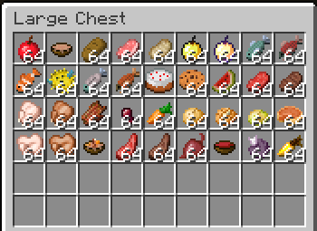

Foods in Minecraft
1. Meats
- Cooked Beef/Steak: Restores 8 hunger points. Obtained from cows.
- Cooked Porkchop: Restores 8 hunger points. Obtained from pigs.
- Cooked Mutton: Restores 6 hunger points. Obtained from sheep.
- Cooked Chicken: Restores 6 hunger points. Obtained from chickens.
- Cooked Rabbit: Restores 5 hunger points. Obtained from rabbits.
- Cooked Fish (Salmon and Cod): Salmon restores 6 hunger points, cod restores 5.

2. Vegetarian and Crop-Based Foods
- Bread: Restores 5 hunger points. Crafted from 3 wheat.
- Baked Potato: Restores 5 hunger points. Obtained by cooking potatoes.
- Beetroot Soup: Restores 6 hunger points. Crafted with 6 beetroots.
- Pumpkin Pie: Restores 8 hunger points. Crafted with pumpkin, sugar, and egg.
- Carrot: Restores 3 hunger points. Found in villages or from zombies.
- Golden Carrot: Restores 6 hunger points and has high saturation.
3. Fruits and Special Foods
- Apple: Restores 4 hunger points. Found in trees or as loot.
- Golden Apple: Restores 4 hunger points and grants regeneration.
- Melon Slice: Restores 2 hunger points. Obtained from breaking melons.
- Chorus Fruit: Restores 4 hunger points and teleports the player randomly. Found in the End.
4. Dairy and Other
- Milk: Removes status effects but does not restore hunger.
- Cake: Each slice restores 2 hunger points. Crafted with milk, sugar, wheat, and eggs.
5. Non-edible Items that Affect Hunger
- Poisonous Potato: Has a chance to poison the player but restores 2 hunger points.
- Rotten Flesh: Restores 4 hunger points but may cause hunger status effect.
6. Special Foods
- Suspicious Stew: Provides different effects based on the flower used.
- Rabbit Stew: Restores 10 hunger points. Crafted with cooked rabbit, carrots, potatoes, and mushrooms.